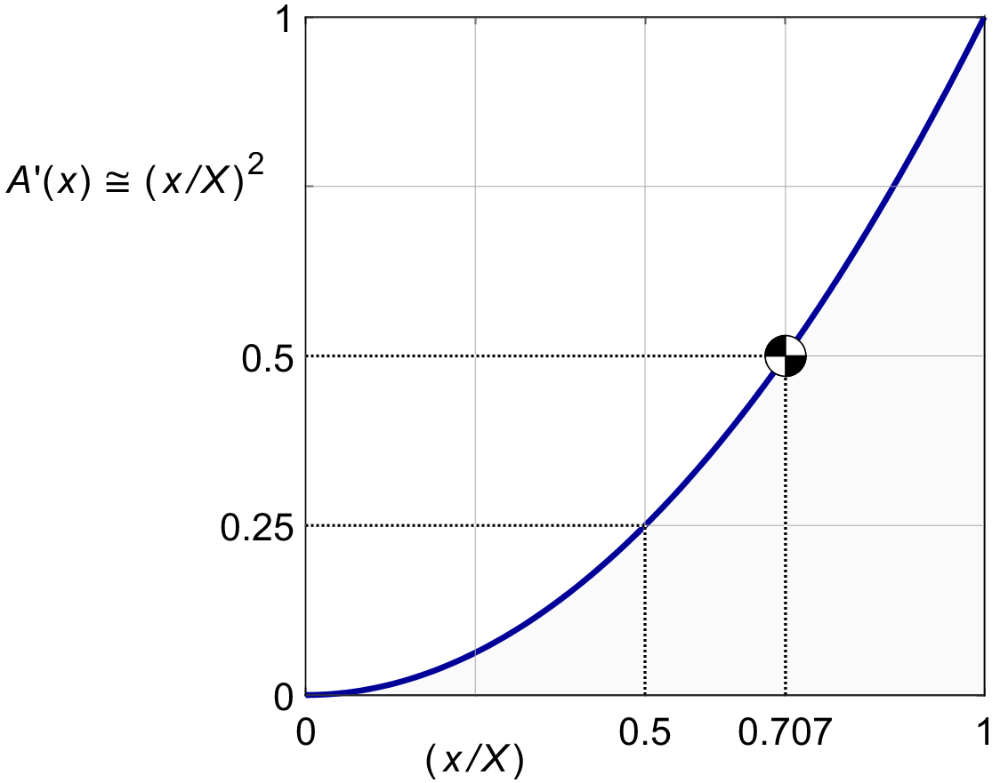

AXIAL MOMENTUM
Most of propeller theory rests on the idea that the momentum tube of figure 4.1 can be subdivided into set of thin-walled concentric tubes, sliding ( and rotating ) inside each other like a pirate's telescope.
These tubes will cut the propeller disk into nested, concentric rings. Figure 2.2 already showed such a tube.
These thin-walled tubes are supposed not to influence each other very much, but such independence is by no means obvious. The justification can be found in vortex theory, which we will discuss much later. The independence of the tubes holds up much better than might reasonably be expected.
If the rings and tubes of a propeller do not interact, then each ring is like a separate propeller. It has its own local induction ratio, its own pitch angle and its own blade elements. The propeller as a whole is just an assembly of independent, nested ring propellers, flying in close formation.
It is usual to derive the conditions for a single ring, and then integrate the ring contributions into an overall value for the whole propeller. We will use the prefix "d" for variables belonging to a ring of "infinitesimal" width dr. For the thrust, the contribution of a ring follows Newton's momentum law (4.7) :
| (6.1) |
The difference is that now dm● is the air flowing through a ring, instead of the air flowing through the whole disk, and that the induction w may vary among the rings. We can add the argument (x) if we wish to emphasize this local variation. The ring equivalent of the non-dimensional mass flow (5.4) is :
| (6.2) |
We make the ring thrust non-dimensional by the definition of (3.2) :
| (6.3) |
Substituting (4.2) and (6.2) into the ring thrust yields :
| (6.4) |
In (5.2) the mass flow m● was for the whole disk area. For a ring of width dr at radius r, the equivalent area is 2 π r.dr. This changes (5.2) into the local mass flow for a ring :
| (6.5) |
The local non-dimensional mass flow dm ′ becomes :
| (6.6) |
The value of b (x) may vary from ring to ring, but the relation a = ½ b from (4.19) remains valid, so in every ring we will have ( 1 + a ) = ( 1 + ½ b ).
Most of the terms in (6.6) cancel, but the terms in r and R remain. By (2.12) we can replace r / R by x / X, and dr / R by dr / R, making dm ′ truly non-dimensional :
| (6.7) |
The light loading approximation simplifies this to :
| (6.8) |
This is simply the geometrical frontal area of the ring as a fraction of the frontal area of the whole disk. For light loading, the non-dimensional effective area m′ for the whole prop disk is simply 1, as in (5.5):
| (6.9) |
For heavy loading, the integral terms will be weighted by the local values of ( 1 + ½ b ).
The integral of (6.9) from the hub to the radius
x
| (6.10) |
Figure 6.1 shows this relation. The figure conveys an important message : the median of the disk area is located at the radius r/R = ½√2 ≅ 0.7. Conventional wisdom has it that a propeller is characterized by its "halfway" radius at 0.7 R.
We will find later that both (6.9) and(6.10) can be reduced by tip loss.
The area within the radius r / R = 0.5 is one quarter of the total disk area, and the area within r / R = 0.25 is only 1/16 of the total disk area. Also, the shape of the blade shank near the hub is dominated by structural considerations, and the central part will be covered by a spinner. All in all, the inner 25 % of the blade is mostly along for the ride.

Figure 6.1 : Non-dimensional disk area within radius x / X.
With (6.7) in (6.4), the local non-dimensional ring thrust is :
dT^' = b(x) .(1+a) . (2 x .dx)/X^2 (6.11)
Integrating dT ′ over the rings gives the overall thrust :
T^' = ∫▒〖dT〗^' = 1/X^2 ∫_0^X▒〖b(x) .(1+a(x)) .2 x .dx〗 (6.12)
For light loading, we can use the dm ′ of (6.8), which yields :
dT^' ≅ b(x) . (2 x .dx)/X^2 (6.13)
The light loading thrust integral is then : T^' = 1/X^2 ∫_0^X▒〖b(x) .2 x .dx〗 (6.14)
If b (x) is constant over the whole blade, then so is a = ½ b, and we have : T^' = b .(1+a) 1/X^2 ∫_0^X▒〖2 x .dx〗 (6.15)
Since the primitive of x is ½ x2, this reproduces (5.11) for the actuator disk : T^' = b .(1+a) (6.16)
With the light loading assumption, this retrieves (5.10).
Figure 6.2 shows the ring thrust contributions (6.11). The area under the curve is the integral (6.15). For uniform thrust, the graph is a right triangle of area ( 1 + a ). Its center of mass is at ⅔X from the left. This is by the way not the same as the median of the area at ½ X√2 , but it is close. We will meet this center of mass in the calculation of the viscous drag.
The curved line is a more typical ( normalized ) thrust distribution. It retains the nominally triangular shape, but it is reduced by local variations of b(x) due to rotational and viscous optimization, and by local reductions on dm ′((i>x) due to tip loss.
The value of (1+a) is an average over the rings in this general case.
TODO Show the line for the reduced integral instead. Lose the blue.
IMAGE
The typical functions in propeller theory are of the form h (x), where h (x) only depends on x, and typically has a teardrop shape which starts with h (0) = 0 at the hub and ends with h (X) = 0 at the tip. They are often shaped much like the "typical" thrust line in figure 6.2.
We will often wish to integrate them over the prop disk, like this :
H( X ) ≡ ∫_0^X▒〖 h (x) .(2 x .dx)/〖 X〗^2 〗 (6.17) &/p>
The effective local disk area dm ′ always contains a term 2x . dx / X2, so we show it separately here, but this is not even necessary to the argument.
Many of these functions are not as easily integrated as (6.15). In such cases we will use numerical integration. Once a h(x) is available, (6.17) is easily integrated numerically. The integral over the infinitesimal width dx becomes a sum over finite widths Δx = X / N:
H( X ) ≅ 1/(X.N) Σ 〖■(N@0) 〗h (x) .2 x (6.18)
This expression sums over N(/i> + 1 points, and divides by N rings. With the end values of h(x) both zero, this is equivalent to the trapezoidal rule.
A typical value for N used to be N = 10 in the days of the slide rule. The result was often improved by Simpson's weighting rule with end correction. Today, N = 10,000 is more common and (6.18) is adequate.